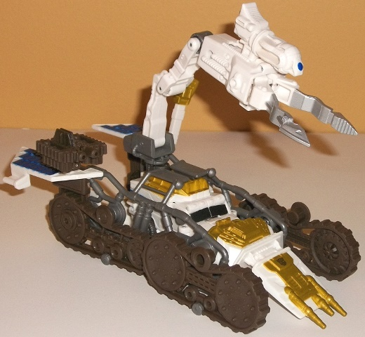

Allegiance
: Autobot
Size
: Cyberverse Vehicle Set
Difficulty of Transformation of Robot
:
Very Easy
Difficulty of Transformation of Base
:
Easy
Color Scheme
: Dull dark purplish
brown, white, milky shiny gray, dark blue, and some pale metallic greenish
gold, black, and silver
Figure Rating
: 7.7
Base Rating
: 8.5
(NOTE: Because this set is partially a repaint, this is not a full-blown review. This mainly covers any changes made to the mold and the color scheme, and merely compares it to the original DotM Legion class Ratchet. For a review on the mold itself, read the review of the original DotM Legion class Ratchet here .)
The "core" Ratchet figure
included with this set is a redeco, and a rather interesting, substantial
one at that. Gone is Ratchet's usual movieverse color of green, replaced
with white and a good deal of an interesting shade of metallic greenish
gold. I'm not sure why the gold has a greenish tint to it-- it makes what
would otherwise be a spectacular and fitting color for a lunar-themed repaint
of Ratchet look just a tad on the ugly side, though I'd argue it isn't
all the way there-- the gold part of it still looks nice against the other
colors, at least. There's a bit of black and some dark brown used for some
of Ratchet's smaller "connector" pieces like his upper arms and waist,
as well as his wheels, and both of these contrast fairly well with the
white. What really makes the color scheme pop, however, are the bits of
dark blue used on Ratchet's lower legs and arms/sides of the vehicle mode.
This is a REALLY nice shade of the color, and goes extremely well with
both the greenish gold and the brown/black. The silver and blue eyes on
his face also look nice, so no complaints there.
Of note is that the
core Ratchet figure has one mold change, and it's that a connector piece
with a hole in it has been added to the back end of his vehicle mode--
this is so that he can hold up his base's large claw piece in this mode.

Ratchet's "Lunar Crawler"
accessory has three different modes, the first of which is a sort of "add-on"
for his vehicle mode, and it's this mode that's my favorite of the bunch.
The spiked front, huge lunar wheels on the sides, and the gray "caged"
bits that surround Ratchet's core vehicle mode make him look pretty beefed
up in this mode and ready for some action on the Moon. The aforementioned
large claw arm stays attached to the top of his core vehicle here, and
can move at the base (at two points), at the middle of the arm, and at
the top of the arm at two points. Additionally, pressing forwards or backwards
on the slider piece on the top of claw-arm will move the claws inwards
or outwards, and is a cool little feature. I'm not sure what the purpose
of the little extra "dial readout" piece on the side of the claw arm is
supposed to be used for, however-- it mostly just gets in the way. The
solar panel pieces on the back end of this mode help complete the "lunar
vehicle" effect, and overall this makes for a nice-looking complete package.
The color scheme on the Lunar Crawler is mostly the same as on the core
Ratchet figure, only with more brown due to the size of the lunar wheels
(unfortunately, despite the mold details, the treads do not actually work).
Thus, my comments about Ratchet's color scheme mostly stay true for his
accessory as well, though I feel a bit of white or greenish gold could've
been painted on the wheels, as they are rather large unbroken areas of
a rather dull color. The dark blue solar panels contrast particularly well,
and I'm glad to see that color used more here. The gray used for Ratchet's
"vehicle cage" is a shiny version of the color, and thus doesn't look boring
like most plastic shades of this color do, particularly in the small amounts
that it's used here. In addition, the mold detailing for the Lunar Crawler
is quite well-done, with little tech bits, rivets, and the like everywhere.
Another cool little detail is that there's a small extra treaded "drone"
vehicle with dark blue solar panel detailing that can also fold in half
and serve as a weapon for Ratchet to hold in his robot mode. Really, my
only real complaints about this mode are that A. the solar panel pieces
don't clip on very solidly and thus come off a bit too easily and B. Ratchet's
vehicle mode doesn't stay in a fixed place with pegs or anything, so he
does "move around" in his center cage a little more than I'd like.
The Lunar Crawler also
has a mobile mode that doesn't require Ratchet at the center of it. Here,
the dark blue solar panel details make up the bulk of the "body" of this
mode, along with the overlapping wheel/tread pieces at the bottom, while
the claw arm is pegged into the front. The greenish-gold-painted pieces
stay at the back end, not really doing anything. It's a fairly decent vehicle
with no real issues beyond those back parts not doing anything, and serves
as a nice "mobile platform" for Ratchet in his robot mode. It doesn't have
any features that the other modes lack, though.
The Lunar Crawler's
final mode is a more "traditional" base mode, with it essentially splayed
out into as flat of a mode as possible, with the large solar panel piece
flipping out to reveal a silver treaded "ramp walkway" for Cyberverse-scaled
vehicles down the center of this base mode. The claw arm serves as the
"center" of this mode, more or less-- presumably for making repairs-- and
the wheel/tread pieces and a few other peripheral pieces frame this core
section of the base. The ramp's treaded indentations are rather overly
large, though, making one wonder how a vehicle could actually go up this
ramp without puncturing its tires. The ramp also doesn't fold down QUITE
enough so that it touches the ground, which is a bit of a design oversight.
Beyond the ramp and claw-arm, there isn't really much going for this mode,
as most of the more eye-catching colors-- like the metallic greenish gold
and dark blue-- are on the bottom of this mode and thus not visible. This
is my least favorite of the Lunar Crawler's three modes, easily.
As a whole, the Ratchet w/ Lunar Crawler Cyberverse set is certainly one of the better sets at the pricepoint, with a solid legion figure for its base and a Lunar Crawler "base" accessory set that looks pretty good in two out of its three different modes. Having a pretty cool-looking color scheme-- that is, matching up white with some nifty colors like dark blue and a metallic greenish gold-- and giving Ratchet a few extra accessories like a drone-gun certainly puts a few points in this set's favor, as well. Recommended if you like Cyberverse sets.
Review by Beastbot